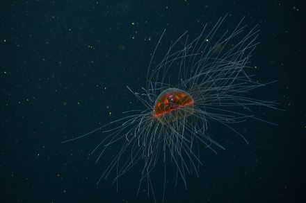

Jellyfish |
|
Silky jelly |
|
Deep-sea crown jellyThe deep-sea crown jelly thrives in the midnight zone, dwelling between 500 and 5,000 meters below the ocean's surface. As one of the most common deep-sea jellyfish species, it is found worldwide. Its bright red bell serves as an effective defense against predators, appearing black in the depths of the ocean. This unique adaptation allows the crown jelly to blend seamlessly into its surroundings, shrouded in a natural crimson camouflage. |
|
|  |
Psychedelic jellyThe psychedelic jelly is a vibrant species of jellyfish that inhabits the midnight zone, at depths of 1,000 to 3,300 meters below the ocean's surface. It is one of the few jellyfish species that give birth to live young. Juvenile psychedelic jellies have a lavender hue, but as they mature, they develop their distinctive tangerine glow. |